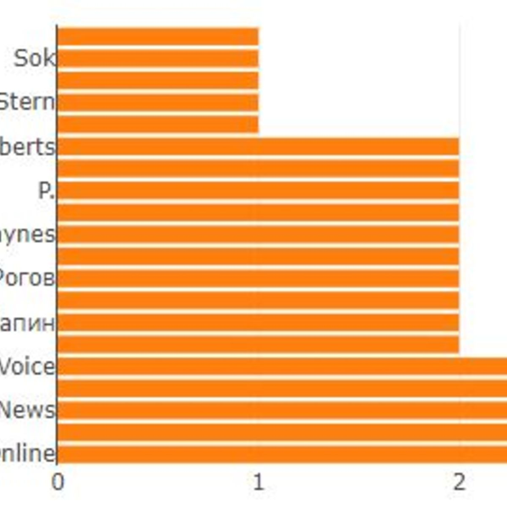
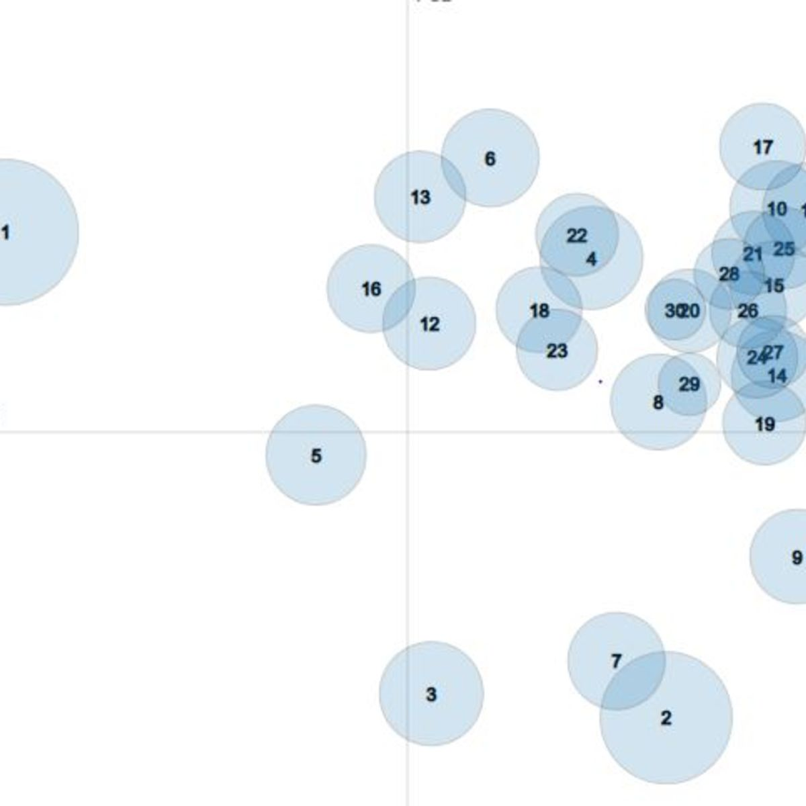

TWITTER ANALYTICS DASHBOARD
Home
About
DASHBOARD HOME
First and Last Names of Fake Accounts
View Graph
Source Code
Sentiment Analysis on User Profile

View Graph
Source Code
Distance Map of the accounts creation

View Graph
Source Code
First and Last Names of Fake Accounts
View Graph
Source Code